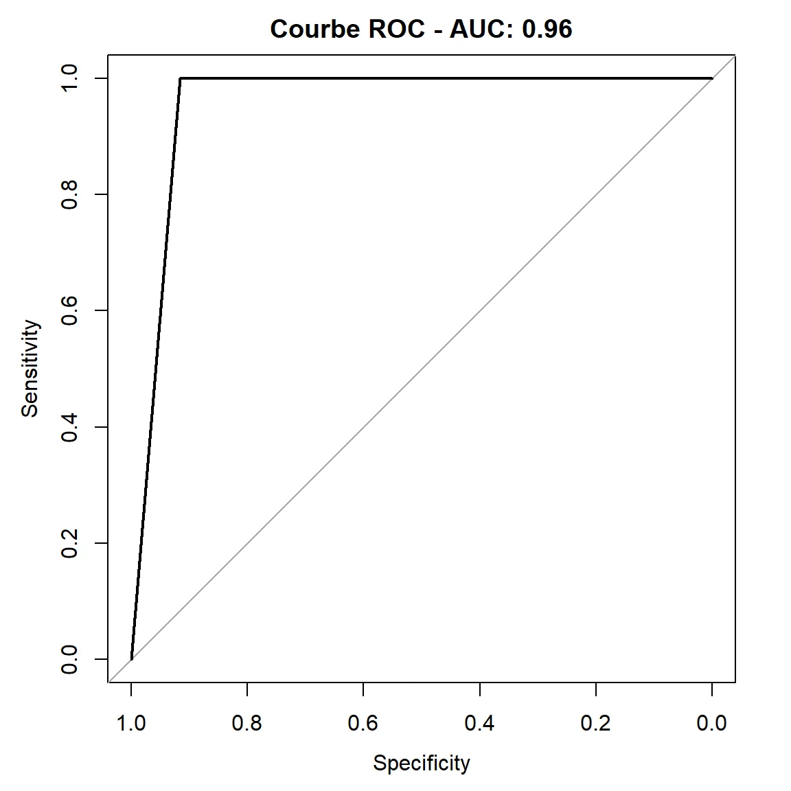
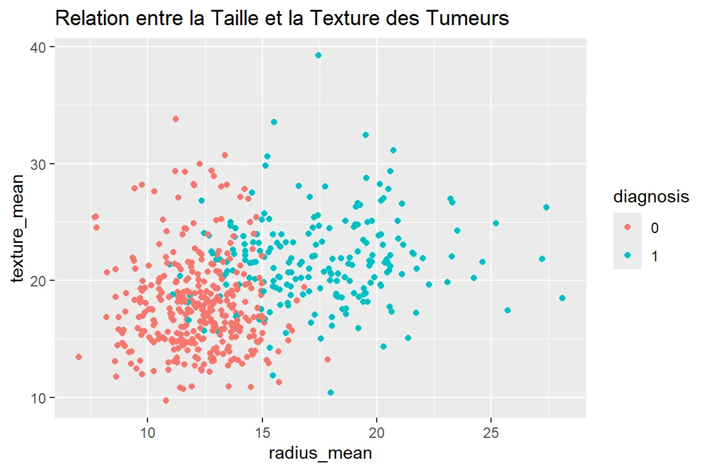
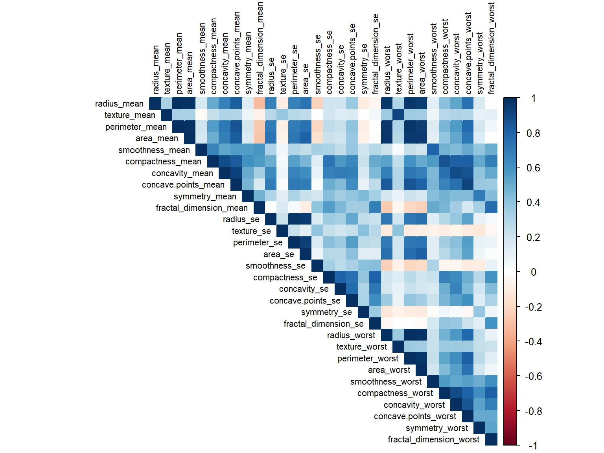

Tous les projets
// Projet
Classification de tumeurs en R
Projet individuel, R et R Markdown
Machine Learning
0,96
AUC
42 / 42
tumeurs malignes détectées
93,8 %
exactitude
Contexte
Classer une tumeur comme bénigne ou maligne à partir de 30 mesures issues d'images (rayon, texture, périmètre, concavité...), sur le jeu de données public Breast Cancer Wisconsin : 569 observations, 357 bénignes et 212 malignes.
Dans ce contexte, manquer une tumeur maligne est l'erreur la plus grave.
Démarche
- Nettoyage : suppression des valeurs manquantes et de l'identifiant, encodage de la cible.
- Exploration : statistiques descriptives, matrice de corrélation, distribution des diagnostics, relation taille / texture.
- Séparation stratifiée 80 / 20 avec caret (456 observations d'entraînement, 113 de test).
- Régression logistique (glm) sur l'ensemble des variables.
- Évaluation : matrice de confusion, exactitude, sensibilité, spécificité, courbe ROC et AUC avec pROC.
- Rapport reproductible en R Markdown, exporté en HTML et PDF.
En images






Cliquez sur une image pour l'agrandir.
Résultats
| Réel bénin | Réel malin | |
|---|---|---|
| Prédit bénin | 64 | 0 |
| Prédit malin | 7 | 42 |
- AUC de 0,96 et exactitude de 93,8 %.
- Les 42 tumeurs malignes du jeu de test sont détectées ; 7 tumeurs bénignes sont signalées à tort comme malignes.
- Dans un contexte médical, ce compromis va dans le bon sens : une fausse alerte coûte un examen complémentaire, une tumeur manquée coûte beaucoup plus.
Ce que j'en retiens
- Le modèle n'a pas convergé et ses coefficients sont instables : les 30 variables sont très corrélées entre elles (rayon, périmètre et surface mesurent presque la même chose) et séparent presque parfaitement les classes.
- Pistes d'amélioration : sélection de variables ou régression pénalisée (Ridge, Lasso), validation croisée, et comparaison avec d'autres modèles comme Random Forest.
Rapport et code
Tous mes dépôts : github.com/payebie